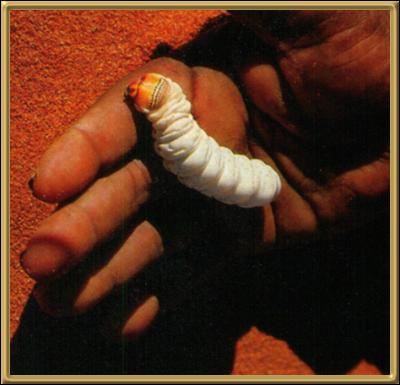

Photographer: Unknown
The Aboriginals considered Witchety Grubs to be a delicacy. My mother tried one once and firmly disagreed! They do eventually turn into a quite a large moth, but it apparently takes three years or so. You'll find more information about them at Lepidoptera Larvae of Australia.